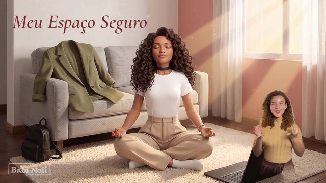

Production: Ametista Seeds
Babi Noli
Original music, illustration and design, made in transparent partnership with AI.
Listen: Spotify Apple Music YouTube Music Amazon Music

First production: the music video for “Meu Espaço Seguro”, with Libras (Brazilian Sign Language) interpretationWatch on YouTube ↗ babinoli.com ↗